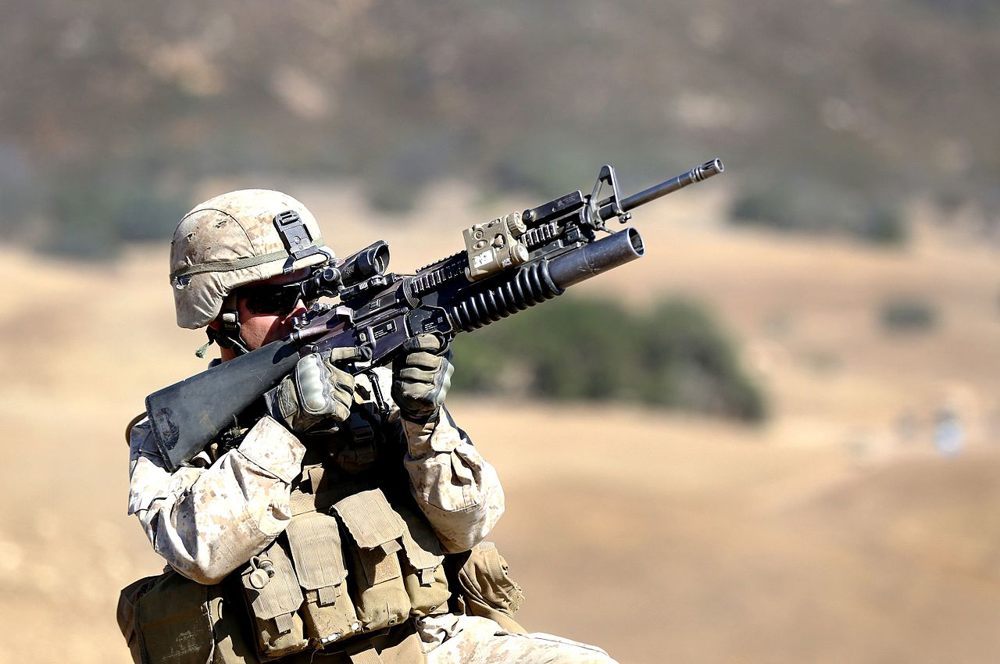
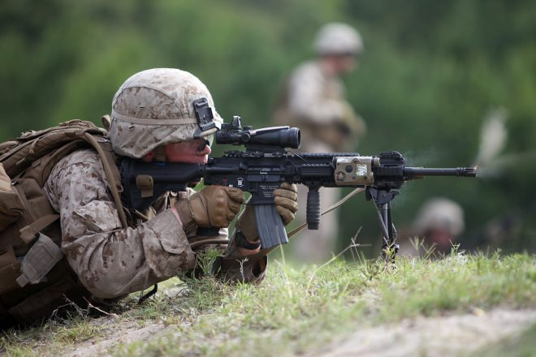

In 1997 the M16A4 Service Rifle was implemented. It came standard with a removable carry handle that attached by Picatinny rail. The most common replacement for the carry handle and sight was the Trijicon ACOG, standing for Advanced Combat Ocular Gunsight. Also common on the M16A4 was a picatinny rail front handguard with four mounting surfaces, top, bottom, left, and right. Usually this handguard was manufactured by Knight's Armament Company. With this handguard it became easier for soldier to install flashlights and Infrared Laser Devices. Often a Surefire flashlight and a Infrared Laser known by military designation PEQ-15 and later the smaller and lighter PEQ-2.
The M27 Infantry Automatic Rifle is based off of the Heckler and Koch HK416 weapons platform. It filled the need to replace the M249 Squad Automatic Weapon, which was the military designation of the Fabrique Nationale Minimi. The M249 is a belt fed automatic rifle firing 5.56x45 millimeter ammunition. It was heavy but reliable. The Marine Corps leadership felt that it was appropriate to replace the M249 SAW with a magazine fed automatic-fire capable rifle that did not look different from the weapons of the rest of the rifle squad. The M27 first deployed to Afghanistan in 2011, while still being tested as a suitable replacement for the M249 Squad Automatic Weapon. The weapon's increased accuracy meant that all M4 Carbines in the Marine Corps rifle squad could be replaced, with the exception of the squad leaders. In 2018 the Marine Corps decided to enter into a deal with Heckler and Kock to order 11,000 more M27s and adopt it as the standard service rifle of the Marine Corps Infantry. 